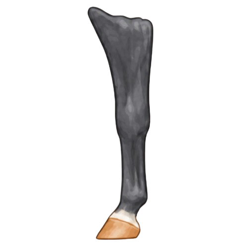
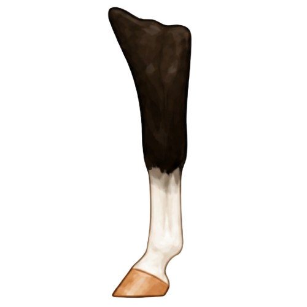

Which Leg?
Leg markings should always be described by the specific limb on which they appear: left front, right front, left hind, or right hind. Identifying the correct leg is an essential part of an accurate horse description.
Leg markings are an important part of describing and identifying horses. Accurate descriptions include which leg is marked, how high the white extends, and any unique characteristics that help tell one horse from another.

White leg markings are an important part of horse identification. Because they are easy to see and generally remain the same throughout a horse's life, they help identify individual horses. Some horses have markings on a single leg, multiple legs, or no white leg markings at all.
When describing leg markings, it is important to identify both the type of marking and the leg on which it appears. For example, "left hind sock" provides a much more accurate description than simply "sock," since the same type of marking can occur on any of the horse's four legs. Clear, specific descriptions help ensure horses can be accurately identified and recorded.




The name of a leg marking is determined by both its location and how high the white extends up the leg. A marking that covers only the coronet band is named differently than one that extends up the pastern, reaches the fetlock, or continues higher up the leg. Learning to identify where the white begins and ends is the key to naming leg markings correctly.
Leg markings should always be described by the specific limb on which they appear: left front, right front, left hind, or right hind. Identifying the correct leg is an essential part of an accurate horse description.
The height of the white determines the name of the marking. White located near the hoof may be classified either as a coronet or pastern, depending on how far it extends below the fetlock. White that reaches above the fetlock may be classified as either a sock or stocking, depending on how high it extends up the cannon bone.
Not all markings wrap completely around the leg. Some cover only part of the leg's circumference and should be described as partial markings rather than assigned a full marking name.
Features such as ermine marks and dark spots can provide additional detail when describing a horse. Including these characteristics helps create a more complete identification record.
When describing leg markings, use a consistent order to ensure clarity. Start with the side of the horse, then identify the leg (front or hind), followed by the type of marking, how high it extends, and any additional details.